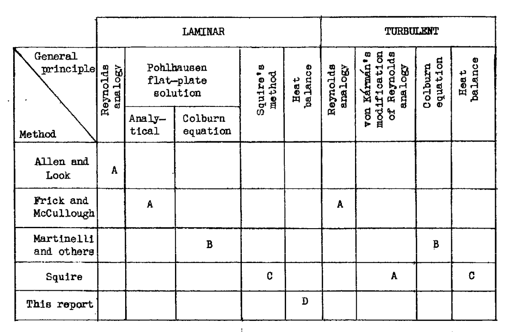
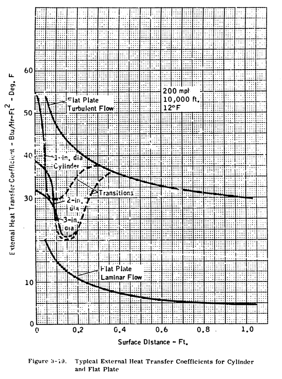

"an effective system for ... wing surfaces to prevent the formation of ice requires knowledge"

Figure 2 of NACA-ARR-A506
Summary
Combustion heated air, independent of the engines, was used on some aircraft.
Key Points
- Combustion heaters were developed independently of NACA.
- 38 NACA publications detail technical aspects of aircraft heaters, including many details on heat exchangers, maturing engineering designs.
- Three publications deal with heat transfer for ice protection.
Discussion
There were numerous NACA publications on aircraft heaters. For the combustion heaters, air was scooped in, heated by burning aviation gasoline, and used for cabin heating, and wing ice protection on some airplanes (The DC-6, for example).
Combustion heaters were developed independently of NACA prior to these NACA publications. However, the NACA publications very much detailed the design of not just the heaters, but also associated heat exchangers and components, as well as data needed for analysis (such as "An Investigation of Aircraft Heaters, II - Properties of Gases", NACA-WR-W-9).
The publications are numbered up to XXXVIII (38). I think that the large number of publications reflects the importance of the technology at the time.
While none of the Aircraft Heaters publications are in the "Selected Bibilography of NACA-NASA Aircraft Icing Publications" , some pertain directly to ice protection:
- Martinelli, R. C., Guibert, A. G., Morrin. E. H., and Boelter, L. M. K.: An Investigation of Aircraft Heaters VIII - A Simplified Method for the Calculation of the Unit Thermal Conductance over Wings. NACA-WR-W-14, Mar. 1943. 1
- Boelter, L. M. K., Grossman, L. M., Martinelli, R. C., and Morrin, E. H.: An Investigation of Aircraft Heaters XXIX - Comparison of Several Methods of Calculating Heat Losses from Airfoils. NACA-TN-1453, 1948. 2
- Boelter, L. M. K., Sanders, V. D., Romie, F. E.: An Investigation of Aircraft Heaters XXXVIII : Determination of Thermal Performance of Rectangular- and Trapezoidal-shaped Inner-skin Passages for Anti-icing Systems. NACA-TN-2524, 1951. 3
These three publications detail aspects of heat transfer that are important to the analysis and design of heated ice protection systems.
NACA-WR-W-14 1
SUMMARY
A simplified approximate method of calculating the unit thermal conductance along an airfoil as a function of distance from the leading edge, by use of heat transfer data for smooth cylinders and smooth flat plates, is presented. Heat transfer rates experimentally obtained by several investigators on models of airfoil sections R.A.F. 25, R.A.F. 30, Clark Y, and NACA M-6 are compared with results predicted by the use of this method. Calculation of heat transfer rates to be expected from a full-scale airplane wing are also given.
The "unit thermal conductance" here is the convective heat transfer coefficient.
INTRODUCTION
The design of an effective system for the distribution. of heat over wing surfaces to prevent the formation of ice requires a knowledge of the unit thermal conductances along such surfaces.
In order to utilize existing heat-transfer data to calculate these unit conductance, the following ideal system is defined:
The leading edge of the airfoil is replaced by a right circular cylinder with a radius approximately equal to the radius of curvature of the leading edge and the upper and the lower surfaces of the airfoil are replaced by smooth flat plates. The mechanism of heat transfer along the leading edge of the airfoil then corresponds to that existing over smooth right circular cylinders, and the mechanism along the remainder of the airfoil is postulated to be equivalent to that existing over smooth flat plates.
The later "Modern Icing Technology" 4 has a figure that somewhat matches the idealized system:

The equations for "existing heat-transfer data" are noted on Figure 2.

The idealized system works well at low angles of attack:

But the method is more approximate at higher angles of attack:

CONCLUSIONS
1. The variation of the unit thermal conductance along a wing can be estimated fairly accurately by an approximate method from known heat-transfer data on smooth cylinders and flat plates.
2. An exact computation of the distribution of the unit conductance along a wing requires the determination of the position of the transition of the boundary layer from laminar to turbulent flow. Such knowledge is necessary for the proper determination of the heat-distribution system in the leading edges.
3. A precise agreement between the predicted and experimental results data taken on small airfoil models is not to be expected because the transition point may occur over a large parentage of the chord in the case of models, depending on the conditions of flow; but this change in position comprises a small part of the chord in the case of full-size wings. 4. The method proposed herein is satisfactory, however, for a conservative estimate of the thermal capacity of a de-icing system. The accuracy of the method is greater for high velocities and for heating sections that extend over a larger part of the profile. The velocity along the airfoil can be obtained from static-pressure measurements or, if these data are not available, can be estimated from an equation given herein.
NACA-TN-1453 2
SUMMARY
A critical comparison and summary is given of the various methods proposed to date for calculating the unit thermal conductance on the outer surface of a heated wing involving both laminar and turbulent boundary layers, and a new equation is suggested which should indicate the effect of the pressure gradient on the laminar heat transfer to a greater degree than do the expressions presented heretofore. For purposes of comparison the different equations are applied to a Joukowski profile for which the necessary data are accurately known and the results are plotted graphically. The unit thermal conductance in the laminar and turbulent regimes computed by the different methods are found to be in good agreement. A procedure whereby the equations for heat transfer from airfoil surfaces may be applied to a propeller shape is presented by means of an illustrative example.
Five methods of calculation were compared.



There are numerous pages detailing the boundary layer theories used.
However, in the end, there is little data to select one method over another, as they yield similar results.
NACA-TN-2524 3
This provides detailed data for use if one wishes to analyze and design double skin passages.
INTRODUCTION Values of the unit thermal conductance for air flowing inside the double-skin passages must be known in order to design a heated-air, leading-edge, anti-icing system. Most of the available data on the thermal conductances for flow of air inside ducts concern the values at points far downstream fram the duct entrance. (Reference 1, however, contains values of the local thermal conductance near the entrance of a circular tube.) Data which define the local heat-transfer rate throughout the length of heated straight ducts are presented herein.


CONCLUSIONS From an investigation of the thermal performance of rectangular- and trapezoidal-shaped inner-skin passages for anti-icing systems, the following conclusions are drawn:
1. In the turbulent region, the average unit thermal conductance for both the trapezoidal and rectangular ducts is about 35 percent less than the values obtained from commonly used equations.
2. Heat-transfer and pressure data obtained for the trapezoidal duct over a range of Reynolds moduli between 1300 and 16,000 indicate that the flow was turbulent.
3. Data obtained for rectangular ducts reveal that the flow may be laminar at values of Reynolds modulus below 1800. Examination of the local heat-transfer rates indicates that the flow may be laminar near the entrances of the double-skin passages even for large values of Reynolds modulus.
4. Measurements of the temperature of the inner-skin surfaces indicate that the inner skin is effective in transferring heat to the outer skin and that perfect bonding of the two surfaces is not necessary. 5. Isothermal pressure drops are predictable within about 20 percent.
6. Additional data should be obtained to establish the effect of various types of entrance (such as are used in actual systems) on the heat-transfer and pressure-drop characteristics of the double-skin passages.
Conclusions
These publications mark some of the maturation of ice protect from being largely empirical to an engineering discipline where thermal systems could be designed with analysis, with good confidence that the results were reproducible.
The leading edge cylinder and flat plate approximation for airfoil heat transfer is not credited to a reference in NACA-WR-W-14. I am not entirely certain, however, that it originated there. ADS-4 perpetuates its use (and the origins are not credited there, either), and I would not be surprised if it is still in use today.

One may note that L. M. K. Boelter was an author on the three publications above, as well as many of the 38 Aircraft Heater publications. He was a Professor of Mechanical Engineering at the University of California, Los Angeles, and founding Dean of its UCLA Henry Samueli School of Engineering and Applied Science. He is also known for the Dittus-Boelter equation. In 1957 he was awarded the ASME Medal. wikipedia
Citations
An online search (scholar.google.com) found citations for
NACA-WR-W-14 8 times,
NACA-TN-1453 4 times,
NACA-TN-2524 4 times,
and "Modern Icing Technology" one time.
One may note that publications where L. M. K. Boelter is an author are cited thousands of times. This may be part of the reason these NACA publications are not cited often, as there were many other Boelter publications on heat transfer to cite.
Notes
-
Martinelli, R. C., Guibert, A. G., Morrin. E. H., and Boelter, L. M. K.: An Investigation of Aircraft Heaters VIII - A Simplified Method for the Calculation of the Unit Thermal Conductance over Wings. NACA-WR-W-14, Mar. 1943. ↩↩
-
Boelter, L. M. K., Grossman, L. M., Martinelli, R. C., and Morrin, E. H.: An Investigation of Aircraft Heaters XXIX - Comparison of Several Methods of Calculating Heat Losses from Airfoils. NACA-TN-1453, 1948. ↩↩
-
Boelter, L. M. K., Sanders, V. D., Romie, F. E.: An Investigation of Aircraft Heaters XXXVIII : Determination of Thermal Performance of Rectangular- and Trapezoidal-shaped Inner-skin Passages for Anti-icing Systems. NACA-TN-2524, 1951. ↩↩
-
Tribus, Myron: Modern Icing Technology - Lecture Notes. Eng. Res. Inst., Univ. of Michigan, Jan. 1952. (Air Res. and Dev. Command, USAF Contract AF 18(600)-51, E.O. No. 462 Br-1, Proj. M992-E.) deepblue.lib.umich.edu ↩